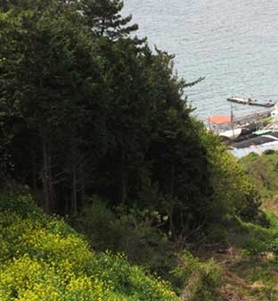

통영의 바다냄새 가득 품은 편안한 펜션
펜션앞에는 작은 항구가 있으며 바다와 병풍처럼 둘러쌓인 산과 어우러져 멋진 풍경을 자아냅니다
특히, 펜션데크에서 바다를 바라보면 저녁노을이 굉장히 아름다운 곳입니다
1층식당에는 전통차와 오리요리가 일품입니다
2층과 3층은 펜션으로 사용하고 있으며 내부가 깔끔하고 럭셔리 합니다
Room
-
블루
인원: 기준 10명/최대 20명
형태:방2,거실,주방,화장실1
(1층은 남,여 화장실 및 샤워도 가능) -
코발트
인원: 기준 5명/최대 10명
형태:원룸/복층,주방,화장실1 -

바다와 시인
인원: 기준 10명/최대 20명
형태:방2,거실,주방,화장실1
(1층은 남,여 화장실 및 샤워도 가능)

Service
-
바다낚시
-
펜션 바다 전망
-

전통차와 식사
-
바베큐
-
족구장
Tour
-
통영 케이블카
-
한려해상 국립공원
-

달아공원
-
강구안(거북선)
-
동피랑벽화마을
-
낭만산조각공원
-
수산과학관
-
제승당
Directions
-
승용차
-
1. 서울 → 바다와시인 펜션
서울-대전(대전/통영고속도로) 북통영 IC-통영터미널방향- 원문고개-산복도로-통영대교-바다와시인펜션
-
2. 대구 → 바다와시인 펜션
대구-서마산 IC-북통영 IC-통영터미널방향-원문고개-산복도로- 통영대교-바다와시인펜션
-
3. 부산 → 바다와시인 펜션 (서마산 경유)
부산-서마산 IC-북통영 IC-통영터미널방향-원문고개-산복도로- 통영대교-바다와시인펜션
-
4. 광주 → 바다와시인 펜션
광주-남해안고속도로-사천 IC-북통영 IC-통영터미널방향-원문고개- 산복도로-통영대교-바다와시인펜션
-
1. 서울 → 바다와시인 펜션
-
대중교통
-
1. 서울 → 바다와시인 펜션
서울(강남고속버스터미널or남부고속버스터미널)-통영 시외버스터미널- 버스정류장 530번버스 승차
(원문고개,중앙시장,달아공원방향 33개정류장 이동)-
새길입구(진낚시)정류장 하차-534번 버스
(통영경찰서,충무교,봉천마을) or 535번 버스
(원문고개,새포마을,답하마을) 승차-바다와시인 까지 약487m 도보로 이동
-
2. 대구 → 바다와시인 펜션
대구/통영간 직행버스(3시간소요)-통영 시외버스터미널-위경로와 같음
-
3. 부산 → 바다와시인 펜션
부산/통영간 직행버스(2시간소요)-통영 시외버스터미널-위경로와 같음
-
4. 광주 → 바다와시인 펜션
광주(고속버스)-진주-통영 시외버스터미널-위경로와 같음
-
1. 서울 → 바다와시인 펜션